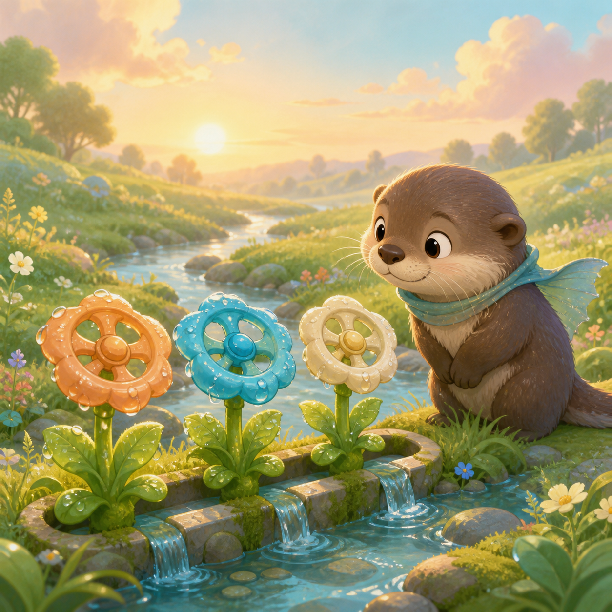
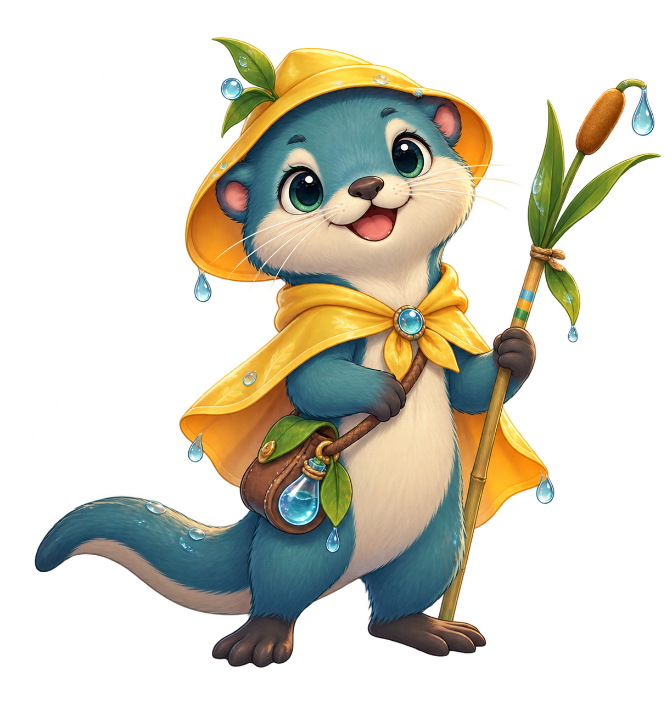

1. Read the note
Each meadow shows the three flow levels the flowers need.


A calm linked-flow puzzle
Tune three linked dew valves to match the meadow note and wake the dawn flowers.
3 meadows · 9 valves · no timer
Best tries: Not yet
Tune three linked dew valves to match the meadow note and wake the dawn flowers.
Each meadow shows the three flow levels the flowers need.
Use − and + to set every linked valve; the live total stays visible.
A mismatch names the first valve to revisit. There is no timer or lives.
Begin by reading all three values before touching a control. The meadow note is a small plan, not a timed test. Compare the targets, notice which valve is furthest away, and decide on a gentle order. A valve can move up or down one step at a time, so you can watch how each change affects the total. Keeping the whole note in view makes the linked system easier to understand.
The current total is a helpful checkpoint, but it is not the only answer. Two settings can share a total while still missing different targets. Look at each valve card, then use the total to confirm the direction of your adjustment. If the total rises too far, step back with the same small controls. This rhythm keeps the puzzle readable and gives every choice a clear cause and effect.
When a check does not match, Dewline names the first valve to revisit. Treat that message as a clue rather than a penalty. Return to the named card, make one considered change, and check again. There are no lives to lose, no countdown, and no hidden score multiplier. The calm feedback loop is designed for learning the relationship between the three linked flows.
A matching answer opens Result. The first two meadows offer the next meadow; the third offers the map. All three cards are already selectable, so choose a sequence for practice rather than treating the map as locked progress. Each selected meadow starts with three zero values. Checks accumulate within the current session, while changing values is free.
This game stores the best check count when the third meadow is completed, plus your chosen language. It does not save valve positions, completed-meadow markers or a paused session. Reloading starts from Main; the saved best can remain when browser storage is available. Clearing site data or changing browser profiles can remove that record. It is not a cloud save or a verified full-campaign score.
Replay the same visible target to compare a new adjustment order. All three meadows are available, and selecting one resets its valves. To compare full runs fairly, start from Main and visit the three meadows in the same order: jumping straight to the third can also produce a best-check record. A lower number from a different route is not evidence of a better full run.
Try another WeightPlay puzzle built around signals, patterns, and careful observation.